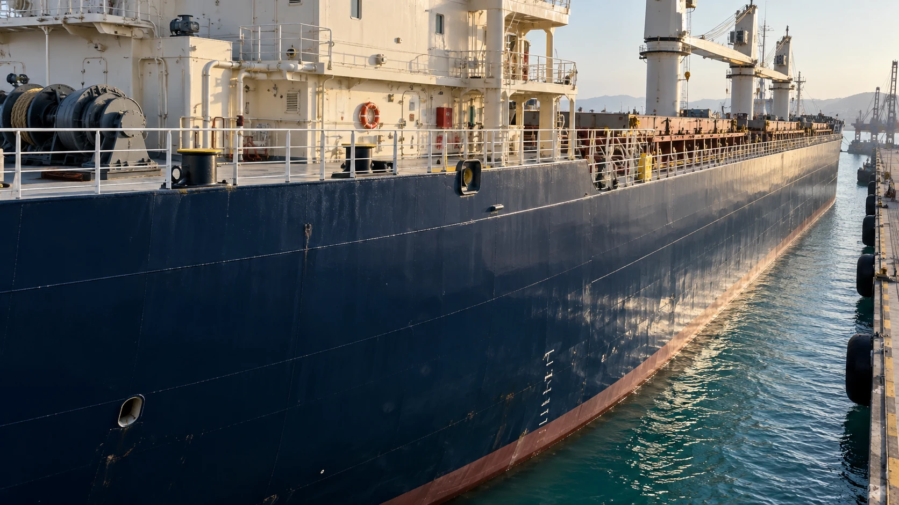

01 / AIR MARINEVESSELS AND MARINE ASSETS
Vessel and asset inspection
Visual condition capture for accessible vessel structures, marine infrastructure and areas of interest. Organised to support maintenance planning and technical review.
Explore service